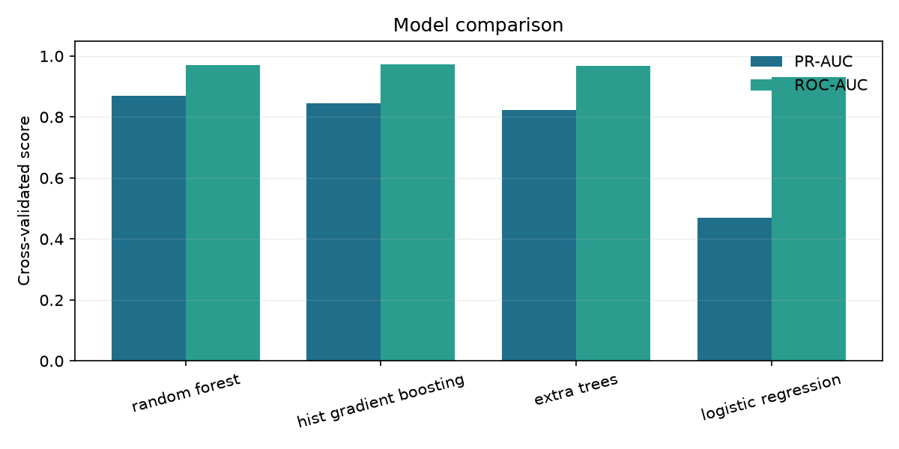
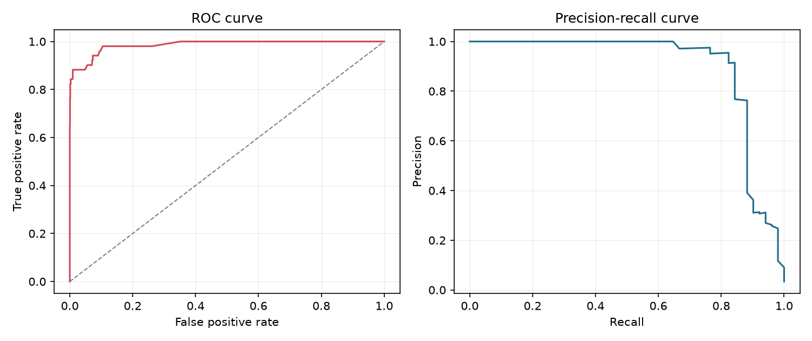
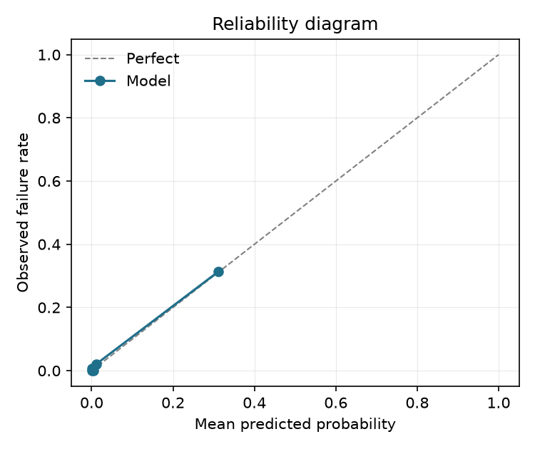
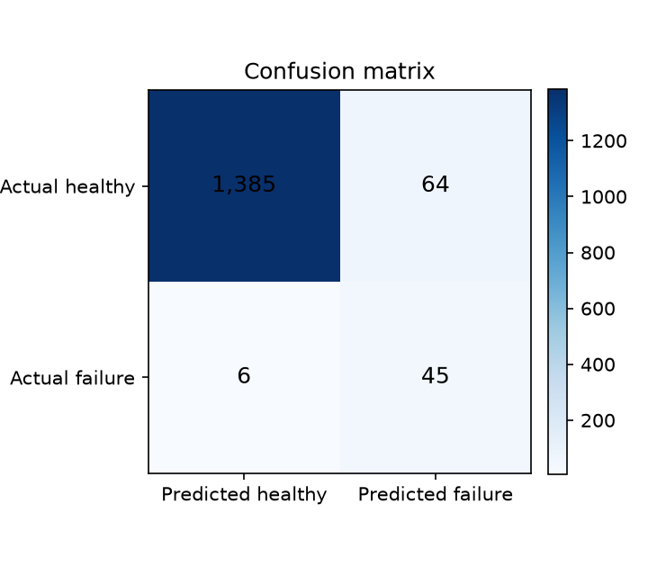
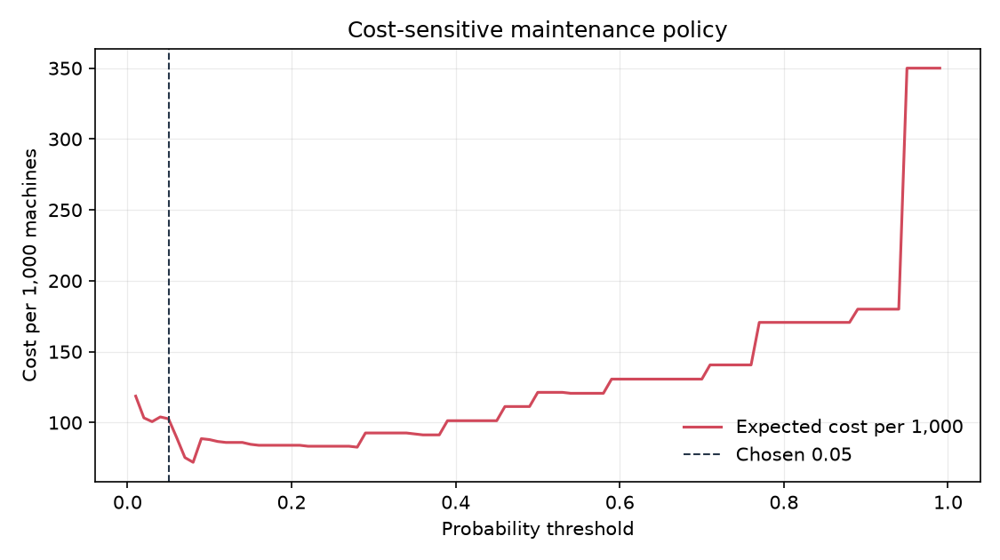
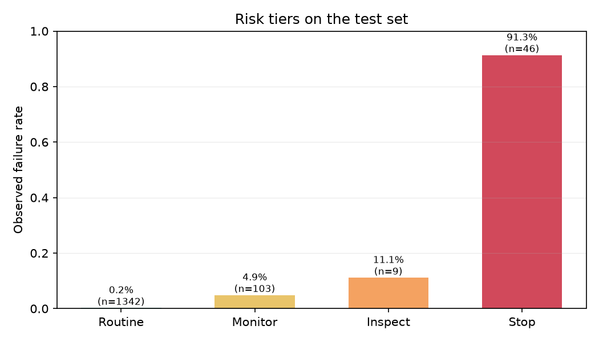
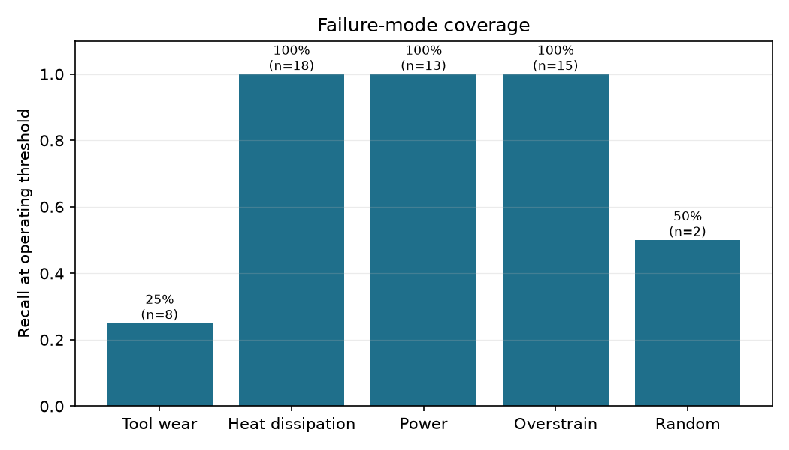
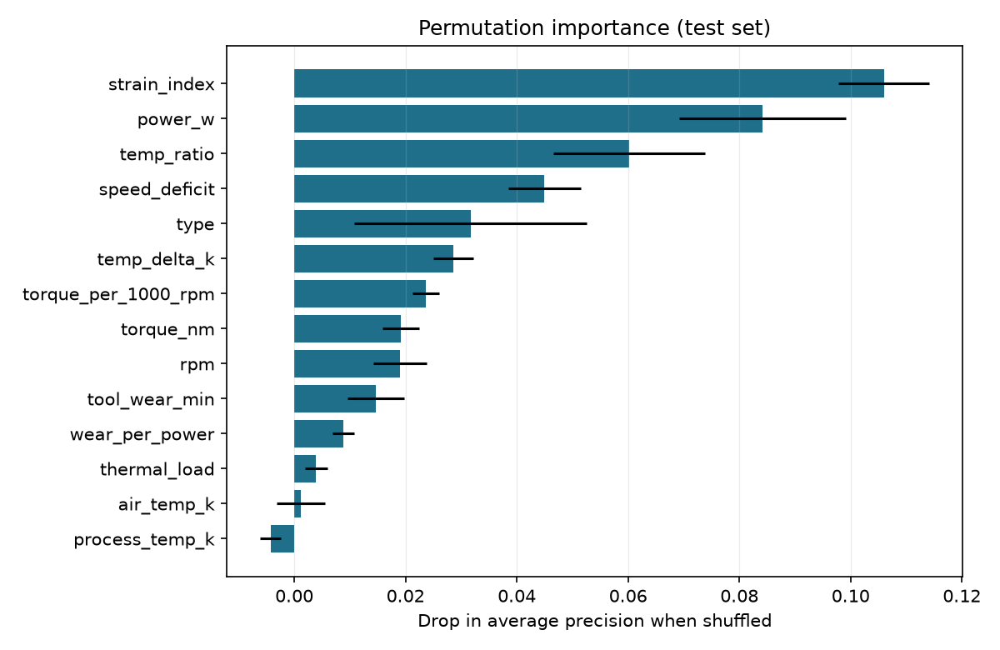

What this project demonstrates
Sensor data is cleaned, split and enriched with thermal, power and wear interactions. Four classifiers are compared with stratified cross-validation. The winner is calibrated, a cost-sensitive maintenance threshold is selected on validation, and the test set is evaluated once. Failure-mode coverage and product-type slices show where the policy works.
Selected model: random forest - Threshold: 0.05 - Cost ratio: 15:1
Model comparison
| Model | CV PR-AUC | CV ROC-AUC |
|---|---|---|
| random forest | 0.8694 | 0.9712 |
| hist gradient boosting | 0.8460 | 0.9730 |
| extra trees | 0.8240 | 0.9678 |
| logistic regression | 0.4700 | 0.9302 |

Test-set evaluation




Risk tiers
| Tier | Machines | Failures | Observed failure rate |
|---|---|---|---|
| Routine | 1,342 | 3 | 0.22% |
| Monitor | 103 | 5 | 4.85% |
| Inspect | 9 | 1 | 11.11% |
| Stop | 46 | 42 | 91.30% |

Failure-mode coverage
| Mode | Occurrences | Detected | Recall |
|---|---|---|---|
| Tool wear | 8 | 2 | 25.0% |
| Heat dissipation | 18 | 18 | 100.0% |
| Power | 13 | 13 | 100.0% |
| Overstrain | 15 | 15 | 100.0% |
| Random | 2 | 1 | 50.0% |

Feature importance
| Feature | Mean drop in AP | Std |
|---|---|---|
| strain_index | 0.10599 | 0.00814 |
| power_w | 0.08420 | 0.01499 |
| temp_ratio | 0.06020 | 0.01361 |
| speed_deficit | 0.04497 | 0.00651 |
| type | 0.03166 | 0.02089 |
| temp_delta_k | 0.02859 | 0.00364 |
| torque_per_1000_rpm | 0.02364 | 0.00238 |
| torque_nm | 0.01916 | 0.00327 |
| rpm | 0.01900 | 0.00482 |
| tool_wear_min | 0.01466 | 0.00509 |
| wear_per_power | 0.00886 | 0.00194 |
| thermal_load | 0.00392 | 0.00205 |

Reproduce
python scripts/fetch_data.pypython -m maintenance.pipelinepython -m maintenance.cli checkstreamlit run dashboard/app.py
Full write-up: RESULTS.md - METHODOLOGY.md - MODEL_CARD.md